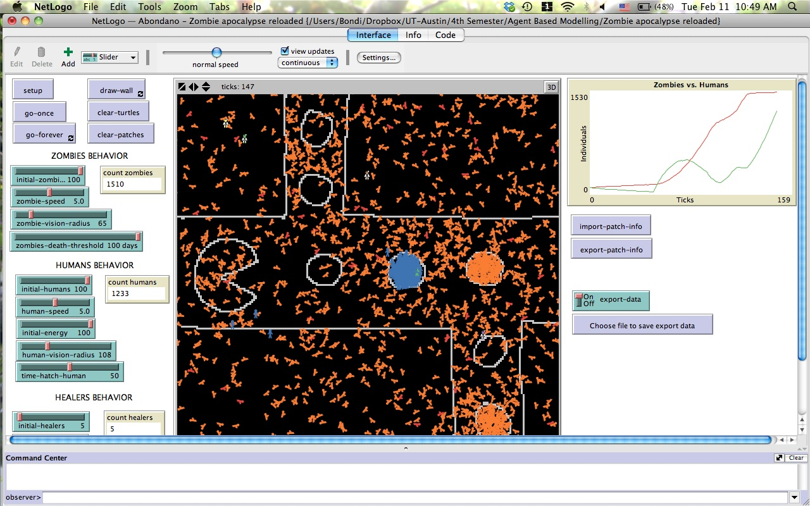
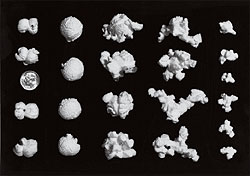

Can you see any patterns or categories in different types of behavior that are emerging? Describe these patterns.
Pattern moves diagonally, vertically or horizontally, but in a straight line. No twirls or curves.
Yay! Got it on the 1st try: Rule #110. Did it looking at the samples in the worksheet, that way I figured out which rules resulted on the next pixel being ON and which ones resulted in the next pixel being OFF.
This is what is known as a Wolfram's class 4 behavior which is nor completely random nor completely repetitive.
I found out that if you have the completely opposite pattern, if you just switch the ONs to OFFs and vice versa, you won't get the inverse pattern.
If you make the screen large enough, the pattern will continue repeating vertically.
There is more than one combination of rules that can result in the same pattern.
For the first image I found that combinations #165, #167 (table below) and #181 give the same pattern. This is because the 001 and 100 rules do not affect the outcome pattern because this combination of pixels does not appear on the screen.
For the second image. Also got this one on the first try!. Combination #99.
Third image. Also got this one on the first try!. Combination #193.
For the images in question 3 I started doing it randomly because I couldn't really see the pixels in the worksheet, but then I realized I could zoom in the PDF. After I realized this, I simply zoomed in the images and figured out what the next generation outcome would be from previous cells, and with this a figured out the combination of rules for each pattern. Once I realized that I could zoom in it was pretty easy and got the patterns on the first try.
This pattern is known as a Wolfram's class 3 behavior which shows that a simple input pattern can result in what seems to be a random outcome. However, I can't really see the difference between class 3 and class 4, because both seem to be not totally random but not totally repetitive. Rule #30 and rule #110 (question 1) look pretty similar to me, so I don't understand why they are considered as different class types.
Yes. On the 1st random setup the run reached a steady state after 1271 generations/ticks.
The oscillators created here are all of the type. During this run there were several gliders and other spaceships, but after it reached a steady state the spaceships disappeared.
The spaceships in the "Gun" folder shows some glider-guns that generate gliders from four different corners and then these guns merge to create a spaceship that glides towards the right of the screen.
The golly-ticker in the "Guns" folder is fun too. Guns at the right create gliders that start moving left towards a "static" cluster while creating the word GOLLY. When the word GOLLY reaches the "static" cluster on the left, the letter starts disappearing.
The puffer-train begins with just a few gliders that then it start making new gliders that spread out towards the right of the screen, and at the end of it when it stabilizes is a"train" made up of blocks, beehives, boats and blinkers. The starting cells are like a spaceship that keep going right creating more and more gliders (glider-gun) which in turn make the rest of the "train" (which looks more like a sword).
Zombies apocalypse!!!
Challenges and what I learned doing the zombie apocalypse model:
If your world is too big, you can change the patch size in the settings button so you can visualize the entire world and not only a section of it. However, it is easier to try your model in a world with smaller dimensions because it works faster. I did this model with a smaller world and then made it 201 X 201. The problem was that when I made it larger, the agents looked really really tiny so I increased the size of the agents so I could visualize them.
Order counts. NetLogo works in the order you give the commands, so it is really important to be careful with the order you type things so the model does what you want it to do.
When you create new agents, you have to assign a singular and plural name for it. For example, to breed humans I types "breed [humans human]". This makes a difference later in the code, and you have to be careful whether you are using the plural or singular term. When you refer to the singular term, you have to tell the model to which specific agent you are referring (e.g. "human 127").
In the "to go" setting you specify what you want your agents to do. To do this you type "ask agent" and then you give a function that you code afterwards. On that new code there is no need to write"ask agent" again because it would be a duplication of the process. For example, I was initially writing the following:
to go
ask zombies [zombies-chase]
end
and then I would ask zombies again in the zombies-chase code:
to zombies-chase
ask zombies
[
ifelse any? humans in-radius zombie-vision-radius
[
set heading (towards min-one-of humans [distance myself])
fd zombie-speed
]
[rt random 360
fd zombie-speed]
]
end
Then I realized that I don't have to write the "ask zombies" inside the"to zombies-chase" command (highlighted in yellow), since I already specified above in the "to go" section, that the zombies-chase command is specific for the zombies breed. This makes the model go way slower since it's making the code run twice every time since you are asking zombies to do this twice.
When using the patch-here command, I had to write"-on" after the agent so it worked. For example: Human-on patch-here. Didn't know that I had to add the "-on".
As you increase the number of agents (initial number or the number that is created by the model afterwards), the model starts working slower. Don't know how to fix this (other than moving the speed slider).
I learned how to make new shapes! pretty cool! Zombies look like zombies, people look like people.
On my zombie apocalypse model, humans always survive!!! This is because I don't have anything that kills humans (other than zombies), as opposed to zombies who die when they haven't eaten any brains after a number of ticks.
It is very useful to change colors to see new individuals that are created by the model, otherwise it would be hard to tell whether the model is actually doing what I'm telling it to do or not. For example, in my model I had zombies red and humans green, but when a human turned into a zombie, instead of being red, it was orange. This allowed me to see easily when new agents were created by the model and keep track of their settings to check whether they died after x number of ticks or not.
There's a bunch of websites that are really helpful, as well as the built-in model for zombies on NetLogo. Many people are interested in zombies¦
I found quite challenging trying to write up the ODD protocol for both the Pepper & Smuts (2000) and for my own project. It was hard because I thought it was very repetitive, specially in the Pepper and Smuts example, there were many things that I wrote on the state variables of the entities that I felt like I had to repeat again on the Process overview and scheduling, and again on the initialization section.
Also, I used the example of an ODD in the paper from Grimm et al. 2006 to help me understand the concepts, or what I was supposed to include in each section. However, on this example there were somethings that I found not to be consistent with the ODD protocol, or that were overly simplistic and did not explain the model fully. For example, I thought that the Process overview and scheduling from that example didn't fully explain all the procedural steps that were supposed to be on the model. When writing my process overview for the Pepper and Smuts model I thought mine was way too long compared with the example from Grimm et al. (2006), so I don't know whether on an actual paper you are supposed to keep it short, or leave it as detailed as possible and maybe include it in the supplementary material.
The hardest section of the assignment was definitely trying to write up my own model, which at this point I believe it doesn't really make much sense. I don't know whether it is because I am trying to include too many variables or whether I still haven't figured out the connections between variables and I am making things too complicated! I keep thinking on trying to make the model simpler, taking some of the variables out, for example, genetic structure of the group, or a genetic signal to determine whether relatedness influences the dispersal patterns in this species... but I don't know whether this is going to mess up things since I believe it is an important element on the model. I also think that maybe I am trying to explain an entire species' social behavior, and maybe I should be more specific and focus on only one thing... but the problem is I think all of the variables are somehow interrelated and should all be included in the model.
At the end of this task... I thought that I should've come up with something simpler for the homework, for example some phenomenon that has already been modelled but not exactly put into ODD protocol words. I thought of working with fission-fusion dynamics with the spider monkeys, and also including Pitheciines... I think uakaris are really cool and it would be nice to try and see the differences in fission-fusion dynamics between spider, uakaris, bearded sakis... and why not, chimpanzees. I might work on this for the final project instead... if the pair-bonding stability project is definitely not viable.
I've been working over the weekend trying to modify the zombie apocalypse model. The hardest/most challenging part has definitely been trying to get the zombies bounce off the walls properly. What I realized was that I could make the zombies/humans bounce off a "wall" (i.e. make them change their heading), but agents can bounce outside/across a barrier if the human-speed or zombie-speed is more than the distance between the agent and a barrier (after changing its heading). While changing the heading of the agents when they encountered a barrier, I realized that the order of operations is really important. At the beginning I tried to include the new code (changing heading when encounter barrier) at the end of the go operations for each of the human and zombies movements (avoid-zombies and chase-humans respectively), but then realized that I had to include it before the agents actually moved. I decided that the best position to insert this chunk of code was after the zombie/human evaluates whether there is a zombie/human ahead, then it modifies its heading according to the presence/absence of zombie/human ahead, and after that I made them evaluate whether there was a wall ahead of them. This is easy to do if the agents were just moving one step (fd 1) every time step, but when their speed is variable and more than just one patch per time step, it makes it more complicated (as explained above).
I've been looking a lot at blogs and examples of different models, but the ones I've seen have the agents moving only one step at a time, so it doesn't really apply for this model.
I tried making the barriers as a new breed [walls wall] but this was hard because it made x amount of walls depending on how much time I clicked on the mouse, and it ended up making like 40 walls for every click. Then I realized that part of the homework was to change the patches to be walls, so I decided to stick to the idea of walls/barriers being set up by a change in patch color. To try and make larger barriers I tried to increase the size of the mouse when painting barriers, but realized that pen-size can only be applied to turtles, not to patches.
At this point I have most of the homework ready... except the proper bouncing off the walls from the zombies and humans (big/important part of the homework!!!), and getting the model to export data every 100 ticks instead of every tick. I think I still don't understand how reporters work because every time I try using a reporter I keep getting errors...
I found what it seems to be a good option in the BehaviorSpace section of the NetLogo dictionary. I found that to make an output every n number of ticks, I could use 'repeat 100 [go]'. However, I tried this and instead of running he code every tick, it ran the code 10 times before the first tick was completed... which is definitely not what I want.
I couldn't find a proper primitive that allowed me to import/export only the patches from the world, so what I did was to export the entire world, without the agents. To do this I created two new buttons: one to export patch and another to import patch. In the setup procedures instead of having clear-all, I included only clear-turtles. That way, I could hit the setup button again without losing the walls created or imported.
To export the data of number of zombies and number of humans every 100 I basically modified the modified flocking example we worked through last class period. Again, it works fine creating output every 1 tick, but have not figured out how to make the output every 100 ticks.
I've been trying to create a list that contains numbers 100, 200, 300... up to 10000, and make an if statement, where if number of ticks is within that list, then write-to-file. But... I haven't figured out how to make a list just like in R, where you tell it to make a list from 0 to 1000, every 100. Something like that...
This is really frustrating... it feels like it should be way easier! I've though of making a string from 1 to 100 and then multiplying it by 100, which would give me a list from 100 to 10000, with numbers every 100... but I think this is overly complicated and it should be...
Tried 'every'... almost worked, but it uses seconds, not ticks. :-(
This is really frustrating... I tried 'every', 'foreach', 'n-value', making lists that multiply with other lists... and nothing works... worst case scenario, do it manually!
So after trying many different ways on how to output data every 100 ticks, in an act of frustration I sat back on my couch and opened one of my favorite iTunes playlists: "The Beatles". After a couple of songs, I heard the melodic voice of Ringo Starr** talking to me. It was definitely a sign from... The Beatles. I was stubborn to ask my fellow classmates for help, but after all the frustration and Ringo's message I decided to try and find a little bit of help from my friends.
**(I wanted to write "the melodic voice of Paul McCartney" but decided google who sang this song, and to my surprise it was Ringo Starr!... Oh! The things you learn doing agent-based modeling...).
My friends gave me the hint of using the mathematical primitive "remainder". In that way, if I divided the number of ticks by 100, I would only get results with no remainders every 100 ticks. I used this formula in my 'if' statement to write-to-file, and it worked!!! I knew it was not supposed to be so hard! I was doing it the opposite way... I was thinking on multiplying numbers that gave me a list of numbers that were 100, 200, 300 ... 10000, as opposed to thinking on division!
Going back and forth on emails with my classmates, we helped each other on things we were stuck on or having problems with the code. They also helped me realize that to make my zombies and humans bounce properly off the walls without moving farther than the wall (if human-speed or zombie-speed exceeded the distance between the agent and the wall ahead). One way of doing this is using the repeat [ ] command, such that agents move one step forward looking for walls until they reach their speed. If they encounter a wall in that process, they change their heading and then continue moving the speed they are assigned.
When I finally had all the requirements for the homework, I started testing every single bit to check that everything together worked properly. Doing this I realized that the first thing I had to do before running the model was to choose the file where I was going to save the output data. Otherwise, when it got to the 100th tick it popped a message saying that the output file had not been specified.
in-cone vs. in-radius
I modified to code for humans and zombies behavior so that instead of using the 'in-radius' reporter I used 'in-cone' and assigned a maximum radius of 10, so that these two agents couldn't see across the entire world... which I thought it was kind of unrealistic (not that the whole zombie/humans living in a pacman-looking city is very realistic). To keep things realistic, I still kept the healers with the 'in-radius' reporter given that they have magical powers and therefore their vision shouldn't be constrained.
randomness in the model ---> overcrowding
I also found out that no matter the initial values of the sliders, randomness is going to be very influential on the output. This is because the initial position of the agents in the world is set up to be random. Therefore, I can have two humans inside a building (surrounded by walls) so they wil start reproducing inside the building until it gets really crowded. For example, on the image below you would think that there are a lot more zombies (orange) than humans (blue/green), but if you take a look at the numbers in the monitors, the population for each agents is very similar to each other (1510 and 1233 respectively). This is because all humans are clumped in one building, while zombies are more spread out around the world. Good for humans who found refuge!... but boring for the model...

I could include a code for population density, where if it gets too dense inside a building or specific area, people start dying faster.
humans also have to die
After seeing that humans were crowding so much I decided to include a section in my code to make humans die after a certain number of ticks, to make the model run less human-skewed. I added energy levels to the humans so that their energy would decrease by one every time they moved (i.e. every tick). Include this I had to mention on the info tab (things to notice) that time for a human to hatch has to be smaller than time for human to die, otherwise all humans die before they get a chance to reproduce.
model running too slow after a couple hundred ticks
Although my model seems to be running well... I still couldn't figure out how to set up the parameters so that it runs properly up to 10000 ticks. It runds good enough up to ~400 ticks, but then it becomes really really slow, even after I modified the initial populations to be very low. If I started with high population numbers, after a few ticks the total number of humans and/or zombies was insanely large making the model run too slow.
info tab: no spelling check
While entering text in the info tab, I realized that I have to be more careful because it doesn't seem to have a spelling check.
One thing I forgot to mention in my previous journal entries and I just remembered, was that while I was trying to code, I kept thinking on R coding... I tried the repeat function as a way to do something similar as a loop in R, but they work differently. More specifically I wanted to do something more like a for-loop in R, but didn't know how to in Netlogo. In general, many of my problems were because NetLogo has a lot of built-in primitives which I'm still not completely familiar with, so I do not know what I have to "make up" myself in the code, or what is already available...
Dummont and Hill (2004) mention the need to get prior field data in order to apply the model thoroughly. This is really important given that, as mentioned in the reading, there is a number of models that are based on assumptions that violate some biological principles of the organisms you want to model. This is why prior information of ecological and behavioral aspects of the species are needed before implementing models. Also, I feel like many of the ecological models make a big deal of the impact the model might have on conservation strategies... however, for this to be true, prior data had to be precise, and models should be tested in the field to determine whether real organisms are really behaving like the model predicts.
One of the questions that come up to my mind is how to apply a generalized model to multiple species. I know that in general, animals follow basic biological principles, but when you want to see the effect of a specific model on a species, you might have to add or remove some of the variables given that they might not apply or be appropriate for your species. In that case, how many added/removed variables would be allowed before the model loses its main structure... and instead becomes a totally new model? For example, in the reading they are talking about herbivorous species, but sheep, cows and other herbivores might differ so much in certain aspects that they might not be comparable??? I don't know... what would be the degree of similarity/difference required to apply a specific model to different species? For example, when talking about the moose, they include many physical, physiological and cognitive attributes that were not included in models for sheep and cows. Therefore... are these comparable in terms of foraging efficiency if models differ that much?
When talking about spatial memory as a two-part code they talk about reference memory (mapping-like representation of feeding sites) and working memory (remember which feeding sites have been recently visited). How does this differ of spatial and temporal memory, where reference memory would be equivalent to spatial memory and working memory would be equivalent to temporal (what time is it appropriate to visit? Not only time of year, but time considering previous visitations... ).
When you have so many parameters like in the sheep model (40 parameters, or also in the Optimal foraging model), can you do a statistical test on which parameter(s) are the most influential in their foraging behaviors? I'm assuming the model would still give similar results if one parameter is removed... I'm assuming more parameters simply gives more accuracy to the model... but again, would be harder to test/verify/evaluate in the field?
Is Tony's GENESYS a hybrid model of ABMs including genetic distance data? How does it exactly differ from ABMs in NetLogo... (read Lina's paper...).
When do you use the ODD headings in a paper? In the Optimal foraging paper (Nonaka and Holme 2007) they seemed to be following a purpose, scale and variable states with assumptions, design and details.. just like the way it is presented in the methods is not exactly the same as it is presented in the ODD protocol. When to use "own" headings and when to include the ODD protocol as is? Should the ODD protocol for a model be specified only as an appendix?
In Shipley and Spalinger (1995) MVT underestimates patch-staying times because they used straight-line distances instead of path lengths... are euclidean distances useful at all in spatial models? Shouldn't you always consider path lengths? How to correct for this underestimation? Several species have reported values of home range which can give an estimate of distances travelled, but not many have reported values for daily path lengths.
Patch staying times... probably strongly influenced by predation pressure, open vs. closed canopy?
EMERGENCE CHAPTER
Unpredictable emergent model outcomes vs. imposed outcomes forced to occur or predicted by the model's assumptions.
Online I found a website describing BehaviorSpace. I found this when I was trying to get the model to export data every 100 ticks. I found the repeat [go] function, but don't really understand why this is related to BehaviorSpace, and not in the regular NetLogo dictionary? In general why aren't the BehaviorSpace terms included in the NetLogo dictionary? However... to be honest, I didn't open the Experiment tab, and maybe that would've helped. Looking at this dialog box, I could've done the "output every 100 ticks" and the "stop at 10,000 ticks" on this dialog box (Time limit or Stop condition), if I only wanted the data to be exported from 100 to 10,000 every 100 ticks.
I left repetitions = 1 but when I finished the experiment in the Behavior space dialog box it said that my sensitivity analysis would be run for 891219 runs. Why this number? Googled and didn't get any answer.
Before running the experiment, I have to indicate how many simultaneous runs in parallel I want... which is the best criteria to choose this number? It gave me 8 as default, but don't really understand what this means.
Confused at the beginning. Should I run a single sensitivity experiment for each variable I will change (i.e. one experiment for changing human speed, one experiment for changing monsters speed, etc.), or one single experiment changing all these variables. In the book it says that the sensitivity analysis is supposed to show you how your output changes when you keep all the global variables constant and only let one variable to vary. I started doing a single experiment where speed and vision angle varied in humans and monsters.
Not sure about the repetitions section...
Now I get it. I had a huge number of runs before because it is all the possible permutations given the "vary variables...". So what I had initially was to change the vision angle increasing it every 10 degrees, and the speed increasing every 0.1. Therefore, the number of possible combinations was 891219 runs. What I did was to make the increments lower, where I increased the vision degree angles every 30 degrees and increasing the speed every 0.5. This decreased the number of runs to 5915 runs, which sounds more feasible.
At the beggining, I had it to start on speed 0 increasing every 0.5. However, if I start with speed 0 nothing is going to happen... agents are not going to move therefore the run is going to take forever. That is why I started with speed at 0.5. This decreased the number of runs to 4056 runs.
When angle of vision for humans is 0, they do not create any flocks. Human vision angle is 240 degrees they form flocks where they all just go in a straight line. When monsters vision is 0, it seems that they en up moving together following humans. But this only happens when there are only a few humans left, not when there are many scattered. Therefore, the 3 mosnters are going to move clumped together following the only humans alive.
For the stop code, I tried entering 'humans = 0' and it wasn't working I used 'not any? humans' instead and it seemed to work.
It takes A LOT of time to do all the runs. It took almost 10 minutes to run 89 out of 4056 runs.
I was really stupid and hit the abort button thinking I could pause it to check the edit settings of the experiment. It would be nice if there was a 'pause' button.
40 minutes to complete 473 runs!!! Will abort and decrease the increment number. Changed it to have a minimum speed of 1 patch/tick, and to increase the vision angle every 45 instead of every 30. This gave me a total of 1215 runs. Still a lot... but more reasonable.
After 4:39 hours (!!!) I get an error message saying that 'Stopping condition failed to report a result: not any? humans'. I checked the dialog box and said that it was on step #135884 of run #1179/1215, so maybe it exceeded the amount of runs? This is the case run where both humans and monsters have full vision (360 angle) but humans more at a 2 patches/tick speed while mosnters move only 1 patch/tick. It would also be nice if there was a way to skip a specific run in the experiment if it is taking too long.
After almost 5 hours, I had to unwillingly click the abort button... there was no way those monsters would get to the lonely human since the human was faster...
However, when I went back to check the excel file, to mu surprise the 1215 runs had completed, with the exception of the run #1179.
Just playing with the output, in general tables are so much easier to read and sort than the spreadsheet output from the experiments.
RESULTS
Quick view. If I sort out by number of ticks (to see under which conditions were humans more persistent) and the largest number is when human speed was max = 2 and monster speed was min = 1, when human vision angle was 270 and monster vision angle was 90. Sorting out didn't show any clear pattern of when humans were most persistent.
So... I figured out this was really stupid! As usual I keep making the silliest mistakes! Instead of keeping one variable constant, I did one single experiment which included all possible permutations. That is why it was taking so long! I decided to keep all variables constant except one, every time.
Changing only speed to increase every 0.5, I had a total of 36 runs which were complete after 5 minutes. So much better...
Also, I just figured out that if I uncheck the update view box, the model runs so much faster!!!
Tried playing around with R but I'm quite rusted on R coding, so I thought it would be quicker to do it in Excel... not sure about that. Easier, but definitely more work and not such pretty graphs...
QUESTION 2
BASELINE EXPERIMENTS
First I did several runs and noticed that the mean standard deviation stabilizes around 500 ticks. Therefore, I set up my Behavior space to stop at 500 ticks.
Having problems with the plot so turned "off" (placing ;; before in code) for that coding section for the plot.
As I was running this experiments I could see a Behavior plot... why??? I couldn't realize how to make this show up or not, but it was nice to have it there.
I was always getting a runtime error saying:
COUNT expected input to be an agentset but got the number 0 instead.
error while turtle 358 running
called by procedure __EVALUATOR
After a while I realized that this happened because when the model started its run, there were no flockmates. Therefore, during the setup I had to add an extra line of code that said 'set flockmates no-turtles'.
I simply had to change the code in the find-flockmates procedure. Instead of having it to be min-one-of [distance myself], I replaced it by min-n-of 6, which reports the 6 closest flockmates.
Changed:
find-nearest-neighbor ;; turtle procedure
set nearest-neighbor **min-one-of** flockmates [distance myself]
end
to
to find-nearest-neighbor ;; turtle procedure
set nearest-neighbor **min-n-of 6** flockmates [distance myself]
end
QUESTION 3
It was really easy to do this (specifying the angle of vision to set heading and find flockmates) by changing the in-radius primitive and replacing it by the in-cone primitive.
QUESTION 4
This was tricky. At the beginning I tried to incorporate the code of sex-associations (same-sex, opposite-sex, or indifferent) in the go procedure, but it was clearly not working. I was getting error messages for the same-sex and opposite-sex associations when animals were trying to cohere and separate. Then I simply added the code in the find-flockmates procedure to change their heading when finding flockmates and this worked.
This homework was challenging but fun. It was all a process of trial and error, but with a LOT of error. Once you have an idea of how things work... things are much easier. My biggest problem was definitely at the beginning when I thought that I had to include all the variables and permutations in one single experiment. Also, it is tricky sometimes to figure out how you want to visualize your data. There are different ways to graph your results, and I thought the best way to graph most of these results (at least for question one) was using a 3D graph, but couldn't find how to do this in excel or ggplot using R. When there are many variables that are changing, and interactions between variables in an experiment, you have to decide which is the best way to create the graphs for them to be most informative or easier to read.
Four basic components of organismal movement:
The internal state (why move?)
The motion (how to move?)
Navigation capacities (when and where to move?) - ability to orient in space and time
External factors affecting movement. - Aspects of biotic and abiotic environment influencinf movement.
Same movement can be attributed different classifications. E.g. foraging = moving-within-patches = station-keeping. It really depends on whether it is defined in terms of a goal, the landscape or temporal dynamics.
Eulerian approach: quantifies population re-distribution
Lagrangian approach: quantifies movement of individuals. For larger organisms - relies on high spatiotemporal resolution over sufficiently large spatiotemporal scales. Telemetry! (limited in body size). --> BUT ALSO DEPENDENT ON COST! THESE ARE EXPENSIVE TECHNOLOGIES.
Ecoinformatics.
Movement databases: www.movebank.org
Tracking tech compared with genetic sequencing.
Lifetime movements??? Really depends on life history variables and telemetry capacity. For large long life history animals it would be harder to have a device that lasts than long.
Movement phases, sampling frequency. The deconstruction of a movement path into a sequence of movement phases depends on the temporal resolution of the data.
Movement phases - made up of smaller units: CANONICAL ACTIVITY MODES
It feels like it would be overwhelming trying to create a model with so many different variables, that can change a lot through time. How precise is the model for a different time period? Looking at internal/external factors observed today, can we really know whether these variables were the same in the past? Can it really tell us about evolutionary history and ultimate causes of specific types of movement?
Characterization of movement... looks very bird-oriented (?)
So, basically looking whether there is a consistent emerging pattern when modelling foray seach? Modelled in habitat patches, but how is a patch defined? From the title I assume they refer to a fragmented landscape, but a patch can simply be a specific patch in the forest with available resources, or a fruiting tree... differences between different types of patches are important, therefore it is important to define what they mean by patch. And what about movement in a non-fragmented forest? Does dispersal happen in the same way? How does it change?
Does the dispersal strategy explained is restricted for movement in a straight line in an ellipsoidal pattern, or does it allow some degree of randomness in the movement? Also, is there a width parameter specified that allows some flexibility in movement?
Energetic constraints in foray search - why carry around resourcces? Is it because it is a fragmented landscape? What about corridors? Don't they have resources in between that support individuals during their dispersal movement? Not all species require these types of energy reserves because they can get resources along their dispersal movement.
Memory - lots of variation across species. The degree in which individuals can memorize is going to depend at some extent in the cognitive abilities of the species in general.
Wang and Grimm 2007
Daily time scale. From the papers we read for this week, this is the only one that makes a clead ODD protocol (obviously... because one of the authors is Grimm, creator of the ODD protocol). So when use and when not to use this protocol as part of the publication? For example, on Tony's paper with Lina, they don't really write an explicit ODD protocol like it is written down here... so I wonder when is it appropriate and when is it not? Also, I was expecting to find supplementary material that included the code for the Tamarins paper... why not include it?
I thought this paper was nice because tested the model against actual data collected in the field.
All these papers talk about individuals looking for resources, but what about when movement patterns are not dictated mainly by food but other things? For example, primates... males seeking females. Of course this will be determined by food availability and distribution for females, and in turn affect male movement patterns... but males might be seeking specific females in their reproductive status, and their movement patterns might be different from females that are not sexually receptive at a given time...
I've been reading about the polygyny threshold model, like Tony suggested. I do agree that my previous ODD protocol was kind of vague. Especially because I think it was very specific for saki monkeys, and very specific to the saki monkeys that I know, which are the ones from Tiputini. So I decided to follow Tony's advice and do something more general and related to mating systems, such as the polygyny threshold model (PTM). This model is very socioecological, which is really good to use on an AMB since I can model landscapes with habitats that vary in their distribution and abundance of resources, males trying to monopolize the better quality habitats and females choosing to mate with males that defend the most productive habitats (better quality in resources). I think the PTM is better to model on Netlogo since it is more precise and it doesn't have so many variables like I was thinking before for the saki monogamy model.
Although PTM is mostly studied on birds it can also be applied to other species such as primates. The PTM makes reference to birds where females are choosing the males for mating, which is similar to what is observed in many primate species where females are considered the "choosy" ones. I will start modeling this model in the simplest way, following the basic statements of the PTM, and then the model can be tweaked to determine some parameters for specific primate species.
I started creating the setup environment for the PTM. The idea is to start the model with males established in specific territories that have a specific amount of resources. Then females start moving in the environment looking for males that are established in territories that meet their minimum nutritional requirements. I assigned dominance levels randomly to males, and what I wanted initially was to setup the males first and then they would create a territory depending on their dominance level: more dominant males would be able to establish in territories with more and higher quality resources. For this I would setup the resources first in the landscape, and then introduce the males to create their territories. However, I thought this was hard to model, and it could be conflicting when a male was displaced from its territory by a more dominant male. To keep it simple I decided to create the territories first, dividing them by a grid, and then placing dominant males randomly to those territories. I have not figured out whether it is better to have resources to be assigned as a patch with a different color, or to be assigned as an agent, and then territories would be an agentset with resources... dunno!
Anyway... how I did it was to make resources to be patches of different colors and then territories are divided by a grid (that is also determined by patches of different colors). To make the resources I used the model we used on a model we used previously in class (the foraging model) and to create the grid I modified the code that was used in one of the models in the Netlogo library (the Traffic model).
Ideally, what I want to create is different patches that have an ID and have a random number of initial resources. Then the most dominant males move to the better quality patches and then the females move randomly until they find a territory that has a male and that has the minimum resource requirements. I decided that females do not have to look for the better quality territories, but instead look for males, and if the male in that territory can monopolize enough resources, the female decides to stay regardless of the male's dominance. Dominance only determines where the males are going to be established according to the habitat quality.
I also started working on the skeleton for the to go procedures, and I have some ideas of the workflow, but haven't set them up to work yet... However, making up the skeleton really helped me for writing the process overview and scheduling of the ODD protocol. Actually, what helped me the most and I think it is a really good idea, were the powerpoint slides with the flow chart of the go procedure for males and females.
I think the assignment for last week was hard and it took me a lot of time! So it was kind of disappointing to see my grade... I guess maybe I'm not reading the assignments correctly, or I'm really not understanding what Tony wants us to do... Maybe the assignments could be a bit more specific. Not leave questions for "pick some variables", but maybe specify which type of variables? This is because in the previous assignment there were too many things that could be done, so I picked to see change the variables that we used when we were working on the flocking model during class...
Parameters - constants in equations and algorithms
Parameterization - step of selecting values for a model's parameters.
Calibration - find good values for a few especially important parameters by seeing what parameter values cause the model to reproduce patterns observed in the real system.
calibrating models against data
calibrating models to fit a model to data
Why calibrate?
Calibrating a model: we want to force the model to match empirical observations as well as possible. Make the model more accurate/predictable.
Calibrating a parameter: to estimate the value of parameters that we cannot evaluate directly. (a.k.a. inverse modeling).
to test a model's structural realism. How robust the model is.
In ABMs, each submodel can be parameterized and tested by itself. Calibration in ABMs is a "fine-tuning" of a small fraction of its parameters.
Trick for credible parameterization:
design your model so its parameters represent real quantities ir rates that could be measured empirically. Otherwise you just have to guesswork... which can be extenuating and time consuming!
show that your parameter values cause the submodel to produce reasonable results in all situations that possibly could occur.
"guesstimating" parameter values:
define upper and lower bounds
fast or slow time scale? strong or moderate impact? often or rare? Define a reasonable range for parameter, from which you can select the middle, or try several values.
CALIBRATION: execute a model many times, each time using different values and then analyze results to see which parameter values caused the model to best reproduce some patterns observed in the real system.
Avoid overfitting.
Categorical vs. best-fit calibration. Categorical: search for parameter values that produce model results within a category or range defined. Best fit: search for one set of parameter values that cause the model to best match some exact criteria (optimization).
Time-series calibration: for ABMs that simulate how a sustem changes over time.
Simulation experiments: results of simulations will tell us what ranges of parameter values produce results that meet the calibration criteria.
Analyze calibration experiment results: how closely does the calibrated model fit the criteria?
So I've been using the markdown for R studio, and Tony tells me he is having a hard time seeing the images. I tried using the MOU syntax, but I haven't upgraded my computer so the software I have is not compatible with the MOU syntax which requires MAC OS X 10.7+ (mine is OS 10.6.8 !!!). So what I did for now was to open the files in R studio and knit the information into an html file so that the images actually work.
Here is some evidence that in R studio it works properly (and a photo for your collection of photos in the field):
For my model
To keep track of all the kids that an agent has, make a list.
For dominance interactions, donÂt make it a yes no but instead give probabilities of winning and taking over the territory.
Instead make them jump from one territory to the other (as opposed to make them moving between territories). This simplifies the model. Make them jump just like in the SEGREGATION MODEL in the Netlogo library.
Use generic food (donÂt make differences between leaves and fruits. Do it general = resources).
Check models that have different levels of patchiness.
Check woodhoopoes model (canvas) for setting up territories.
From slides
Visual testing
Scale-scolor, label and plabel
To import images: import-pcolors
Read-line. It reads and entire line of data, puts it in a string and looks up for spaces. It will print out words in a line. Reads and parses out based on, for example, white spaces. Reads all characters until end of line and then separates words.
The other one does the same but does it until you hit enter. It separates by when you hit enter???
Tony said it would useful for me to check the Woodhoopoe model. To be able to open two windows of NetLogo in my Mac computer, I followed Tony's advice of copying the folder where Netlogo is located. I copied it and gave it a different name and it worked. This model simulates woodhoopoes scouting for vacant territories after they decide to leave their group, which is basically what I want to do with the males in my model. Reading the info tab there are a lot of similarities with what I want to do.
"Birds undertake scouting forays. Subordinate adults decide whether to scout for a new territory with a vacant alpha position, using the scouting decision submodel described below. Birds that do scout choose randomly (with equal probability) between the two directions they can look (left or right along the row of territories). Scouting birds can explore up to five territories in their chosen direction. Of those five territories, the bird occupies the one that is closest to its starting territory and has no alpha of its sex. If no such territory exists, the bird stays at its starting territory. All birds that scout (including those that find and occupy a new territory) are then subjected to predation mortality, a stochastic event with the probability of survival 0.8."
Especially regarding territories having alpha and subordinate individuals. In my case, there will only be a hierarchy among males, and females will all be the same rank. Also, in my model I will not include chances of predation.
However, I have to include mortality in my model, otherwise there will be too many birds for the amount of territories.
I guess my model functions using the same basic principle as the woodhoopoe model: the stay-or-leave question of when should an individual (in my case it would be any agent: an unsatisfied female or an unsatisfied male) leave a group. In the woodhoopoe the decision of staying or leaving in a group is based on the idea that a group provides safety for individuals. However, in my model this decision is based on the availability of resources for individuals.
So... in the whoodhoopoe model, the size settings are 12x0. So there are 12 patches in a row... so each territory is a single patch?
I've spent a while to make a checkerboard pattern for the patches of my world... it seems to be more complicated than I thought. I am using the remainder function so that
to setup
Shade the patches
ask patches
[
ifelse ((remainder pxcor 2) = 0.0) and ((remainder pycor 2) != 0.0)
[ set pcolor black]
[ set pcolor white]
ifelse ((remainder pxcor 2) != 0.0) and ((remainder pycor 2) = 0.0)
[ set pcolor black]
[ set pcolor white]
]
end
but this seems to be more complicated... this does not give me a checkerboard pattern, but instead it just gives me a black/white pattern for ycor lines 0,2,4... but not for ycor lines 1,3,5...
This is because I am overriding the first ifelse with the second ifelse.
I'll try tomorrow...
I kept working for a bit... and finally got it to work!!! Good night!
Last night while I watching a movie and eating pop corn, I thought it would be pretty cool to model how corn kernels pop. Pop corn kernels are supposed to pop into different shapes depending on the structure of the kernel. Just like the fireworks model in the NetLogo library, it would be interesting to have a pop corn model...

Today I've been trying to setup the agents. Incorporating females and trees is easy... I'm simply setting them randomly in the world. The tough part has been incorporating the males. Basically what I want them to do is to be ordered in number of dominance level, and then have the male with highert dominance move-to the patch/territory with more trees (so basically I had to setup the trees first before setting up the males). I've been able to have them go to the patch with most resources, but I'm having a hard time having each male go to a specific patch. I've been trying to create while loops, but have not succeded. Also tried using sort and foreach, but it didn't work. After trying for a long
I asked Tony for help and it works now.
One of the problems was that the way I was assigning dominance, two males could have the same dominance. I was using the 'random' function, as opposed to the random-float. Tony's advice was to assign a dominance value to each male using random-float, and the sort them out and assign that order to a new variable that is called rank. Therefore, males with lower dominance values will have the higher rank (this is counterintuitive but it helps modeling in such way that you can rank them), where males with rank = 1 are the ones who are going to the territories with more trees. We did this by first assigning dominance using the random-float, and then using foreach and sort-on to assign rank. Then we asked the males in the rank order to find-pathches if they were not occupied by a higher ranking male.
create-males initial-males [
set shape "bird side"
set size 0.2
set color blue
**set dominance random-float 1**
set male-energy 50
]
let i 1
**foreach sort-on [dominance] males**
[ask ? [set rank i set i i + 1]]
foreach sort-on [rank] males [
ask ? [find-patch ask patch-here [set occupied? true]]
]
To find-patch what they did was to move to the unoccupied patch with maximum number of trees.
to find-patch
move-to max-one-of patches with [occupied? = false] [number-trees]
ask patch-here [set occupied? true]
end
Now the setup of the world is working just like I wanted!!! :-) Thanks Tony!
This is going to help me a lot with my model!
I could include in RANK REVERSALS, where lower ranking males that defeat higher-ranking males take over their rank status, and vice versa. That way, lower-ranking males can escalate.
Be careful with the probability of success of lower-ranking males. Do not exaggerate.
I could also include something similar to the fleeing model, where males that are defeated have to move in-radius x from that territory (therefore, they cannot simply move the next available patch, if the patch is adjacent to the winner... ). Just an idea...
I downloaded the MarkdownPad to make the .md file because when I copy-pasted the code it looked funky. I'm still trying to figure out how to enter code appropriately...
Got it! I just have to enter tab ...
Working through this hackathon now I feel (a bit) more confident now while coding. I know Iâm not the best at coding, but at least it now takes me less time to achieve something I have in mind. For example, I feel a bit more confident with foreach primitive and differences between set and let. Something Iâm still having a bit of problems is with reports, but while doing the plot I feel like it makes more sense now (although I ended up not using to-report in the plots).
One of the most important things I realized during this hackathon was the importance of the order of the procedure. IT'S ALL ABOUT THE PROCEDURE!!! It really matters where you put things in the code. For example, I had a lot of problems trying to assign whether males were happy or unhappy, and that is because I was inserting this chunk of the code right after setting up the males in the world. However, their level of happiness also depends on how many females are there in the patches, and I hadnât set up the females at this point. This made either all males become happy or all males be unhappy (Happy? = true/false). I realized that I had to insert this part of code AFTER I had created the females. When I did this it worked just fine.
Another problem I had was trying to make males and females go only to trees that still had energy/resources. First I tried to tweak the âhidden?â attribute for trees, so that trees became hidden (hidden? = true) when their energy dropped to 0. However, this was not working for me so I tried changing the color of trees and it worked just fine. What I did was to make trees turn unto the patch color (pcolor) when their energy levels dropped to 0. Then they would turn back to red when the regeneration time had passed and resources (tree-energy) would be available again for malesâ and femalesâ consumption. I also found this really nice because the tree icon, when turned into the pcolor, the small tree trunk remained visible, so it was easy to track when a tree had run out of resources (when all or most trees had run of resources it looked like a deforested tree).
I feel that many of my go procedure is very repetitive. However, I donât know if I can make it more general because attributes for males and females are specific (although similar e.g. female-energy and male-energy). I thought of making just one agentset and dividing them into males and females (sex attribute)⦠it is something I can try in the future to simplify the model.
Something Iâm still having problems with is some of the syntax. For example, it is still a trial-and-error thing for me to decide when to use brackets and when these are not necessary. For example, I still donât understand why this works
move-to min-one-of trees with [color = red] [distance myself]
â¦but this doesn't:
move-to min-one-of trees [distance myself] with [color = red]
when Iâm trying to make the turtles move to the closest tree that is visible.
Yesterday I tried to setup my github account on my computer, but apparently github only works on Mac OS X 10.7 or above (and my computer was 10.6.8). I was able to create the repository online, but couldnât add the file. What I did was to finally install the new software in my computer (which is good because now I can actually use MOU syntax, which also requires OS X 10.7 or above).
When I got to upgrade my computer, I downloaded github but still didnât know how to add a file. Later (Monday), Tony helped me to create the repository. This was also really simple. All I have to do is save the file in the folder that is the repository. Tony also mentioned that I can make changes online and then clone it into my computer.
URL: https://github.com/labondano/Abondano-ABM/tree/master/PTM
Today I was trying to make some output plots, and I was having problems. I would set up pens and everything, but nothing would show up. Tony helped me and it was something really silly! I wasnât calling the plots in the go procedure, so of course the code for the plots wasnât showing up. All I had to do was to include the plots on the go procedure, right after the tick line.
e.g.
to go
move
bla
bla
bla
tick
do-plot1
do-plot2
do-plot3
end
When doing the plots, I also tried to use reporters (to-report) but then I realized that for I was doing it was not necessary and I could just write it down in the plot procedure. However, if the plots are complicated to-report procedures will be useful.
For today's assignment, we had to have some sort of output. First I thought that it would be better to do some experiments on BehaviorSpace, but since I'm interested in looking at fluctuations of polygynous vs. monogamous groups as resources increase or decrease, I thought it would be better to use the graphs that I created on the model.
While doing this, I realized that if I right click on the plots, I can export them into a .csv file. This can be useful if I just want to export the plot data and perhaps do some quick stats, as an alternative to behavior space.
Some of the output graphs I obtained were hard to analyze. I have a lot of fluctuations from one tick to another, so its not a smooth line that is easy to read. I don't know whether this is some error in my model, or this is just how it is. I still have to include several things to the model, such as females reproducing and having infants moving with them until they reach certain age. I was thinking of also giving age to individuals, so when they reach certain age they die, and that way I won't overcrowd the world.
Other things I thought it would be nice was to have males and females moving towards the patches with the total amount of resources available (tree-energy)), instead of the total amount of trees (which is not a true representation of the amount of energy that the patch is providing). I could also try to have the minimum amount of resources to be the actual number of resources (tree-energy) as opposed to the amount of red trees required).
I like the Mac version better...
I finally got R studio to work on my computer. All I had to do was to go to the terminal and look for previous versions of R that were installed in my computer, and then delete these files using the commands:
rm -rt
And what this command did was to remove all the files contained in the folder R.frameworks/Versions/2.1.1. Now R studio works and I can hook it up with Netlogo. Yay!
Ihad problems connecting R to Netlogo. I tried to do it the alternative way for Mac, but it didn't work so I tried to use the terminal. I realized I needed to be careful working with the terminal because I had to have spaces after sudo and after nano, otherwise it wouldn't work. I did the systemcheck.nlogo and all seemed to be working fine.
Then I went through some of the steps from the Thiele tutorial. I did again the exercise we were working on last class with the FLocking model, and got it to work on my computer as well.
I also played with the JGR program, which it kindly installed the required R packages automatically. It works very similar to R studio, but R studio's interface is better in my opinion because instead of popping out plots, you can have them in the same screen, and see previous plots. Also, the help screen is also on the same window, which I find it easier.
MySQL and PostgreSQL: Largest open source databases Download: http://code.google.com/p/netlogo-sql/ (put this in the extensions folder inside netlogo) http://www.mamp.info/en Apache setup: 80 & 3306
For MAC use MAMP. (Apache + SQL + php) For PC use XAMPP. (Apache + SQL + php + Perl.)
The convention is to capitalize commands.
New primitives:
SQL Commands: - check cheat sheet Tony posted online for MySQL.
Today I continued working on question 3 of the Programming assignment. My 'sim' function seems to be working just fine. However, when I'm running the simulations I have to do setup a smaller number of ticks otherwise my computer crashes with 300 or 500 ticks. I used 10,20 and 50 ticks to test my simulations. While doing the simulation function, we (Andrew and I, with Tony's help in class)realized that we could use NLCommand instead of NLDoCommandWhile, and it worked in both cases.
For the second part of question 3 I started doing it manually (with my rusted and very basic knowledge of R). In this case I want to store not only a single value but instead I want to store a data frame that contains all the values for vision every 0.5 . In this case, what I had to do first was to create an empty dataframe where I could store my output from the simulation. Then I created a for loop where I run the simulation for every vision value I was interested (i.e. from 1 to 10, by increments of 0.5) until it reached the last value in that sequence. Then I copied the code that I used previously for the simulation, and then I basically appended every single output to the preexisting dataframe to get the final output.
After writing this code I read again the assignment and saw Tony's HINT. I realized this is the same code from Thiele's paper where there is a tutorial. It is a much simpler and cleaner code, so I decided to stick to this one instead.
For the last part of question 3, I also used the code from Tony's hint / Thiele's tutorial. On a first try, I did the replication simulation and then I used that output to make the dataframe. However, when I checked the names for this dataframe they seemed odd (weird string of random numbers). Initially what I did was to rename the table with the respective vision values for each column. Then I realized that if I made the dataframe to be the output of the simulation function it would be better. I moved the data frame code up to the replication function, asking to give the output as.data.frame and this made the names of the columns to be the vision values, just like I wanted.
In general, I had to test everything with fewer ticks and replicates (I tested with 10 and 20 ticks, and 3-5 replicates instead of 10) because otherwise my computer would crash. I even left it running overnight trying to knit and get the markdown file, but in the morning when I checked it seemed like my computer was going to explode. So I decided to leave it without kniting.
Today I worked on the Netlogo part of the homework (Question 4).
I realized was stupid last week... when I did the rsystemcheck last week, I thought it was working because I didn't get an error message (which was what I was getting before). However, I didn't realize that the R_HOME and the JRI_HOME had "null" values (hitting myself against a wall when it happened!!!). I tried downloading Java again, repeating the terminal and alternative methods to setup the environment, but it wouldn't work. I downloaded Java again, to make sure that I downloaded the 64-bit version and not the 32-bit, but again it wouldn't work...!!! (even after restarting, logging off, turning off the computer...). Therefore, my R extension never worked in my computer... :-(
I realized this pretty close to the assignment deadline so I decided to go ahead and do the coding part trusting that it would work. I used the r primitives for Netlogo that we learned last time and from NetLogo-R-Extension website (using mostly the r:eval primitive and the r:put primitive to create new variables). I realized that to be able to call that new variable, I had to have it in my global variables to be able to use it in the procedure (I could've also used let instead of set...). Given that I couldn't really check whether the code was working in my computer, I checked my code by comparing it with one of my classmate's code, and it seemed pretty similar. The only problem I had was that I wasn't extracting any specific information from MySQL, so I had to add that I wanted to SELECT the average deviation of flockmates FLOM my flockingresults table, and then use that for question 4. Again, I couldn't really test whether this worked given my problem with Java (which I hope to fix soon), but looking at the code it makes sense so I really hope it works.
Today I realized that I have a problem in the homework I posted yesterday. I went to MySQL website and looked at the flockingresults table, and realized that I only had one line of data, which I'm not sure why this happened, but I think it is because in my code for the simulation function, I just have it to output the result for the first part of question 3, but for the other two parts of question 3 I have no code in my simulation to append the new output to the flockingresults table in MySQL. However, I don't really know whether this is what happened because when I print my tables, they show different results in RStudio...
The Evers et al. (2012) paper is interesting because it involves vigilance. It could be tweaked or applied not only to groups that have dominants and subordinates, but it would be interesting to se how social dynamics and movement pattern change for example while spider monkeys or other primates are doing territorial boundary patrols or deep incursions, and seeing how this vigilance behaviors change in those specific contexts... or even for the spider monkeys it would be really cool how this model is applied when they visit the salt licks!
I've always thought that it would be really interesting to do apply a decision making model to spider monkeys and their visits to the salt licks.Proyecto primates has enough data to design a good model to predict when the monkeys are going to visit the salt lick, and there has to be some sort of consensus decision making to decide whether they are going to go down and feed from the lick or not. It would be cool to model this perhaps to determine whether spider monkeys going down to feed from the lick is actually reflecting any consensus decision making or whether it is one individual who dares to go and then the others follow along.
The GrooFiWorld from Puga-Gonzalez et al. (2009) could be useful if I even want to do something with ABSMs and sakis. SAkis have a lot of grooming, so it would be cool to see how the emergent patterns of social affiliation in sakis differs from that of macaques. Moreover, in sakis it would be cool to compare with the titis, to see if parental care is actually playing any role in the affiliation patterns, given that titis have strong paternal care while sakis don't.
Cooperation as a strategy cannot infect a population of defectors. But a population of cooperators CAN be invaded by defectors. Defect as a strategy can invade but can't be invaded --> evolutionary stable strategy is to defect.
But, cooperative behaviors over a long term can have a better payoff than being defector. Tit-for-tat strategy: On the first round of an encounter you cooperate on the first time. And then on subsequent encounter with that same individual, you mimic their behavior on the previous encounter. In the long term this coopearative behavior has a better payoff.
website: www.christopherxjjensen.com/Easy-IPD/IPD_Tournament.swf
AAPA craziness. I was worried about trying to finish up the presentation and totally blanked out about doing the digital journal (to be honest I didn't really think we had to do it this week, but I saw afterwards and saw that we had to). Oops! :-(
I thought of using Hemelrijk's dominance model (from the modified version on the model that I found on Open ABM and includes feeding - by Sean Barton), but I thought it would be simpler to have males interacting if they enter each other's territory, without estimating the other male's dominance value. I though a good way to set up the interaction was to assign a winning probability of 0.8 to the male with highest dominance value in the interaction, and a winning probability of 0.2 to the male with the least dominance value in the interaction. (In the future I could make this more complex by assigning different winning probabilities depending on the specific dominance values the males have at the moment of the interaction). To setup the interaction what I did was to randomize a number between 0 and 0.8 for the dominant one, and then randomize a number between 0 and 0.2 for the least dominant one, and the agent with highest resulting dominance is the winner. Then the winner will be assigned with the dominance value of the more dominant male in the interaction, and the loser will take the dominance value of the least dominant male in the interaction.
To do this what I did was to make unhappy males to go any patch that had enough resources (more than the male resource threshold) and if the patch is occupied, then there would be a dominance "fight" (i.e. intra-male interaction). To verify that these interactions were actually working I made the males who were losers to turn its color to yellow, and then look at the probabilities for each of the two males in the patch and corroborate that the one that turned yellow was actually the male with lowest probability-win value. To avoid several males being yellow all the time, I included a like at the beginning of my go procedure to set all males to be blue again. Therefore, what I will see is males "blinking" yellow (reflecting that there are dominance interactions going on) but then turning back to blue.
When I ran this I was having problems with some males (I assume the ones with lowest dominance) to have no patches to go to. This is because this male did not find a patch that had enough resources to fulfill its minimum resource threshold. One option in this case would be to always have a lot of trees, but I would also like to test the model when resources are low. Therefore, I decided that a good option would be to make males that can't find a patch to DISPERSE outside of the would, mimicking that a male would have to go farther away if it can't find a proper patch with enough resources and if this males can't win over the other males in the world. In this case, to mimic the fact that a male disperses outside the world, the easiest thing is to make him disappear out of the world, which in Netlogo language, it means that I have make that male "die".
The problem here is a struggled on when should I make the males die, because I ask them to move first and then interact if not happy. I can't kill them before they move... (that would be unfair with the poor lower ranking males). And this can only happen after the males have the dominance interaction, given that lower ranking males can outcompete higher ranking males.
After struggling with this problem, I realized that this was not the error. The error was that I was not assigning the patch-energy, therefore, some patches did not have any patch-energy to be compared with the males' min-resource-threshold. Although the dispersal idea above is a good idea, it doesn't really make sense in this case because I'm asking males to go to any patch that has enough resources, regardless of whether there is a male on it or not. Then, if there is a male, they engage in a dominance interaction... but in theory there should always be patches with available resources, otherwise all males would be dead.
I also played a bit with the size of the agents. For males I assigned size according to their current dominance values, so males that have higher dominance are larger, and males that have lower dominance values are smaller.
To male females reproduce I basically had them hatching infants when females reach the energy needed for reproduction, which is set in the interface. Initially I had this value at 30, then I had it to change since I have my females start with an energy value of 100. Infants move with their moms until they read a dispersal age. One could change dispersal age depending on whether the species is precocial (early dispersal age) or atricial (later dispersal age), which could apply both for birds and mammals.
To determine whether infants become male or female, I am not assigning sex until they reach their age of dispersal. Initially I thought I could make a list of breeds (a list that had males and females as breeds), but couldn't do it. What I did instead was to assign a random integer (0 or 1) to the infant. If it was 1 it resulted being a male, otherwise it was a female.
I was going to code how to make infants move. However, I first need to create links between the mother and the infant, because I want infants to follow their mothers until they reach age of dispersal.
I still don't know whether I should make infants forage or not, or wait until they become adults to forage and use resources in the patches. It makes sense to make them forage since the whole point of the PTM is to select males that can provide enough resources for the females' offspring to survive...
IMPORTANT: if I want females to lose energy when they reproduce, I have to put this line of code before they hatch the infants. Otherwise, if will say that infants do not own female-energy.